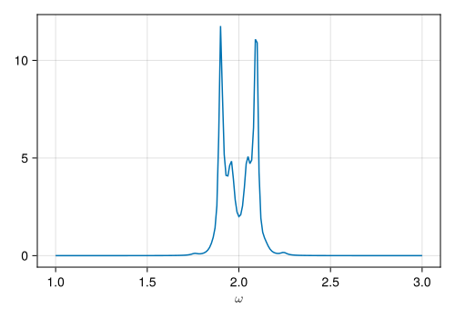

Cavity QED system
Introduction
Cavity quantum electrodynamics (cavity QED) is an important topic for studying the interaction between atoms (or other particles) and light confined in a reflective cavity, under conditions where the quantum nature of photons is significant.
Hamiltonian
The Jaynes-Cummings model is a standard model in the realm of cavity QED. It illustrates the interaction between a two-level atom (\(\textrm{A}\)) and a quantized single-mode within a cavity (\(\textrm{c}\)).
Now, we need to build the system Hamiltonian and initial state with the package QuantumToolbox.jl to construct the operators.
\[ \begin{aligned} H_{\textrm{s}}&=H_{\textrm{A}}+H_{\textrm{c}}+H_{\textrm{int}},\\ H_{\textrm{A}}&=\frac{\omega_A}{2}\sigma_z,\\ H_{\textrm{c}}&=\omega_{\textrm{c}} a^\dagger a,\\ H_{\textrm{int}}&=g (a^\dagger\sigma^-+a\sigma^+), \end{aligned} \]
where \(\sigma^-\) (\(\sigma^+\)) is the annihilation (creation) operator of the atom, and \(a\) (\(a^\dagger\)) is the annihilation (creation) operator of the cavity.
Furthermore, we consider the system is coupled to a bosonic reservoir (\(\textrm{b}\)). The total Hamiltonian is given by \(H_{\textrm{Total}}=H_\textrm{s}+H_\textrm{b}+H_\textrm{sb}\), where \(H_\textrm{b}\) and \(H_\textrm{sb}\) takes the form
\[ \begin{aligned} H_{\textrm{b}} &=\sum_{k}\omega_{k}b_{k}^{\dagger}b_{k},\\ H_{\textrm{sb}} &=(a+a^\dagger)\sum_{k}g_{k}(b_k + b_k^{\dagger}). \end{aligned} \]
Here, \(H_{\textrm{b}}\) describes a bosonic reservoir where \(b_{k}\) \((b_{k}^{\dagger})\) is the bosonic annihilation (creation) operator associated to the \(k\)th mode (with frequency \(\omega_{k}\)). Also, \(H_{\textrm{sb}}\) illustrates the interaction between the cavity and the bosonic reservoir.
Now, we need to build the system Hamiltonian and initial state with the package QuantumToolbox.jl to construct the operators.
N = 3 # system cavity Hilbert space cutoff
ωA = 2
ωc = 2
g = 0.1
# operators
a_c = destroy(N)
I_c = qeye(N)
σz_A = sigmaz()
σm_A = sigmam()
I_A = qeye(2)
# operators in tensor-space
a = tensor(a_c, I_A)
σz = tensor(I_c, σz_A)
σm = tensor(I_c, σm_A)
# Hamiltonian
H_A = 0.5 * ωA * σz
H_c = ωc * a' * a
H_int = g * (a' * σm + a * σm')
H_s = H_A + H_c + H_int
# initial state
ψ0 = tensor(basis(N, 0), basis(2, 0));Construct bath objects
We assume the bosonic reservoir to have a Drude-Lorentz Spectral Density, and we utilize the Padé decomposition. Furthermore, the spectral densities depend on the following physical parameters:
- the coupling strength \(\Gamma\) between system and reservoir
- the band-width \(W\)
- the product of the Boltzmann constant \(k\) and the absolute temperature \(T\) : \(kT\)
- the total number of exponentials for the reservoir \((N + 1)\)
HierarchicalEOM.BosonBath object with 21 terms.Before incorporating the correlation function into the HEOMLS matrix, it is essential to verify (by using correlation_function) if the total number of exponentials for the reservoir sufficiently describes the practical situation.
tlist_test = 0:0.1:10;
Bath_test = Boson_DrudeLorentz_Pade(a + a', Γ, W, kT, 1000);
Ct = correlation_function(Bath, tlist_test);
Ct2 = correlation_function(Bath_test, tlist_test)
# plot
fig = Figure(size = (500, 350))
ax = Axis(fig[1, 1], xlabel = L"t", ylabel = L"C(t)")
lines!(ax, tlist_test, real(Ct2), label = L"$N=1000$ (real part)", linestyle = :solid)
lines!(ax, tlist_test, real(Ct), label = L"$N=20$ (real part)", linestyle = :dash)
lines!(ax, tlist_test, imag(Ct2), label = L"$N=1000$ (imag part)", linestyle = :solid)
lines!(ax, tlist_test, imag(Ct), label = L"$N=20$ (imag part)", linestyle = :dash)
axislegend(ax, position = :rt)
figConstruct HEOMLS matrix
Here, we consider an incoherent pumping to the atom, which can be described by an Lindblad dissipator (see here for more details).
Furthermore, we set the important threshold to be 1e-6.
pump = 0.01
J_pump = sqrt(pump) * σm'
tier = 2
M_Heom = M_Boson(H_s, tier, threshold = 1e-6, Bath)
M_Heom = addBosonDissipator(M_Heom, J_pump)Checking the importance value for each ADOs...[DONE]
Preparing block matrices for HEOM Liouvillian superoperator (using 4 threads)...
Progress: [ ] 1.0% --- Elapsed Time: 0h 00m 01s (ETA: 0h 01m 36s)Progress: [==============================] 100.0% --- Elapsed Time: 0h 00m 01s (ETA: 0h 00m 00s)
Constructing matrix...[DONE]Boson type HEOMLS matrix acting on even-parity ADOs
system dims = [3, 2]
number of ADOs N = 97
data =
MatrixOperator(3492 × 3492)Solve time evolution of ADOs
Solving time evolution for ADOs by Ordinary Differential Equations method...
Progress: [ ] 0.2% --- Elapsed Time: 0h 00m 02s (ETA: 0h 16m 40s)Progress: [==================== ] 66.7% --- Elapsed Time: 0h 00m 03s (ETA: 0h 00m 01s)Progress: [==============================] 100.0% --- Elapsed Time: 0h 00m 04s (ETA: 0h 00m 00s)Solution of hierarchical EOM
(return code: Success)
----------------------------
Btier = 2
Ftier = 0
num_ados = 1
num_expect = 2
ODE alg.: OrdinaryDiffEqLowOrderRK.DP5{typeof(OrdinaryDiffEqCore.trivial_limiter!), typeof(OrdinaryDiffEqCore.trivial_limiter!), Static.False}(OrdinaryDiffEqCore.trivial_limiter!, OrdinaryDiffEqCore.trivial_limiter!, static(false))
abstol = 1.0e-8
reltol = 1.0e-6Solve stationary state of ADOs
Expectation values
observable of atom: \(\sigma_z\)
observable of cavity: \(a^\dagger a\) (average photon number)
plot results
fig = Figure(size = (600, 350))
ax1 = Axis(fig[1, 1], xlabel = L"t")
lines!(ax1, t_list, σz_evo_H, label = L"\langle \sigma_z \rangle", linestyle = :solid)
lines!(ax1, t_list, ones(length(t_list)) .* σz_steady_H, label = L"\langle \sigma_z \rangle ~~(\textrm{steady})", linestyle = :dash)
axislegend(ax1, position = :rt)
ax2 = Axis(fig[2, 1], xlabel = L"t")
lines!(ax2, t_list, np_evo_H, label = L"\langle a^\dagger a \rangle", linestyle = :solid)
lines!(ax2, t_list, ones(length(t_list)) .* np_steady_H, label = L"\langle a^\dagger a \rangle ~~(\textrm{steady})", linestyle = :dash)
axislegend(ax2, position = :rt)
figPower spectrum
ω_list = 1:0.01:3
psd_H = PowerSpectrum(M_Heom, steady_H, a, ω_list)
# plot
fig = Figure(size = (500, 350))
ax = Axis(fig[1, 1], xlabel = L"\omega")
lines!(ax, ω_list, psd_H)
figCalculating power spectrum in frequency domain...
Progress: [======== ] 28.4% --- Elapsed Time: 0h 00m 01s (ETA: 0h 00m 02s)Progress: [================= ] 57.7% --- Elapsed Time: 0h 00m 02s (ETA: 0h 00m 01s)Progress: [========================== ] 87.1% --- Elapsed Time: 0h 00m 03s (ETA: 0h 00m 00s)Progress: [==============================] 100.0% --- Elapsed Time: 0h 00m 03s (ETA: 0h 00m 00s)
[DONE]
Compare with Master Eq. approach
The Lindblad master equations which describes the cavity couples to an extra bosonic reservoir with Drude-Lorentzian spectral density is given by
# Drude_Lorentzian spectral density
Drude_Lorentz(ω, Γ, W) = 4 * Γ * W * ω / ((ω)^2 + (W)^2)
# Bose-Einstein distribution
n_b(ω, kT) = 1 / (exp(ω / kT) - 1)
# build the jump operators
jump_op = [
sqrt(Drude_Lorentz(ωc, Γ, W) * (n_b(ωc, kT) + 1)) * a,
sqrt(Drude_Lorentz(ωc, Γ, W) * (n_b(ωc, kT))) * a',
J_pump
];
# construct the HEOMLS matrix for master equation
M_master = M_S(H_s)
M_master = addBosonDissipator(M_master, jump_op)
# time evolution
sol_M = HEOMsolve(M_master, ψ0, t_list; e_ops = [σz, a' * a]);
# steady state
steady_M = steadystate(M_master);
# expectation value of σz
σz_evo_M = real(sol_M.expect[1, :])
σz_steady_M = expect(σz, steady_M)
# average photon number
np_evo_M = real(sol_M.expect[2, :])
np_steady_M = expect(a' * a, steady_M);Constructing Liouville-von Neumann superoperator...
[DONE]
Solving time evolution for ADOs by Ordinary Differential Equations method...
Progress: [==============================] 100.0% --- Elapsed Time: 0h 00m 00s (ETA: 0h 00m 00s)
Solving steady state for ADOs by linear-solve method...[DONE]plot results
fig = Figure(size = (600, 350))
ax1 = Axis(fig[1, 1], xlabel = L"t")
lines!(ax1, t_list, σz_evo_M, label = L"\langle \sigma_z \rangle", linestyle = :solid)
lines!(ax1, t_list, ones(length(t_list)) .* σz_steady_M, label = L"\langle \sigma_z \rangle ~~(\textrm{steady})", linestyle = :dash)
axislegend(ax1, position = :rt)
ax2 = Axis(fig[2, 1], xlabel = L"t")
lines!(ax2, t_list, np_evo_M, label = L"\langle a^\dagger a \rangle", linestyle = :solid)
lines!(ax2, t_list, ones(length(t_list)) .* np_steady_M, label = L"\langle a^\dagger a \rangle ~~(\textrm{steady})", linestyle = :dash)
axislegend(ax2, position = :rt)
figWe can also calculate the power spectrum
ω_list = 1:0.01:3
psd_M = PowerSpectrum(M_master, steady_M, a, ω_list)
# plot
fig = Figure(size = (500, 350))
ax = Axis(fig[1, 1], xlabel = L"\omega")
lines!(ax, ω_list, psd_M)
figCalculating power spectrum in frequency domain...
Progress: [==============================] 100.0% --- Elapsed Time: 0h 00m 00s (ETA: 0h 00m 00s)
[DONE]Due to the weak coupling between the system and an extra bosonic environment, the Master equation’s outcome is expected to be similar to the results obtained from the HEOM method.
Version Information
__
/ \
__ __ __ \__/ __
| | | | / \ / \
| | | | ______ ______ \__/_ _\__/
| |___| |/ __ \ / __ \ / ' \/ \
| ___ | |__) | / \ | _ _ |
| | | | ____/| ( ) | / \ / \ |
| | | | |____ | \__/ | | | | | |
|__| |__|\______) \______/|__| |_| |_|
Julia framework for Hierarchical Equations of Motion
≡≡≡≡≡≡≡≡≡≡≡≡≡≡≡≡≡≡≡≡≡≡≡≡≡≡≡≡≡≡≡≡≡≡≡≡≡≡≡≡≡≡≡≡≡≡≡≡≡≡≡≡
Copyright © QuTiP team 2023 and later.
Lead developer : Yi-Te Huang
Other developers:
Simon Cross, Neill Lambert, Po-Chen Kuo and Shen-Liang Yang
Package information:
====================================
Julia Ver. 1.11.3
HierarchicalEOM Ver. 2.4.2
QuantumToolbox Ver. 0.25.2
SciMLOperators Ver. 0.3.12
LinearSolve Ver. 2.38.0
OrdinaryDiffEqCore Ver. 1.15.1
System information:
====================================
OS : Linux (x86_64-linux-gnu)
CPU : 4 × AMD EPYC 7763 64-Core Processor
Memory : 15.615 GB
WORD_SIZE: 64
LIBM : libopenlibm
LLVM : libLLVM-16.0.6 (ORCJIT, znver3)
BLAS : libopenblas64_.so (ilp64)
Threads : 4 (on 4 virtual cores)